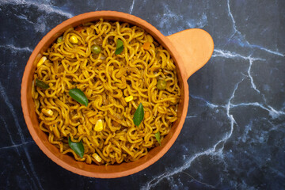

Homemade Masala Maggi

Learn how to make maggi from a professional. In the industry since birth.
Ingredients
- Maggi with masala
- Water 2 cups
- Salt (according to taste)
Steps
- heat water till a boil
- now on high heat, add your masala and stir to mix it well, add salt according to taste.
- Immediately add your noodles and start stirring to prevent burning from bottom.
- Keep gently stirring till most of the water is dried off.
- Serve hot and enjoy!!